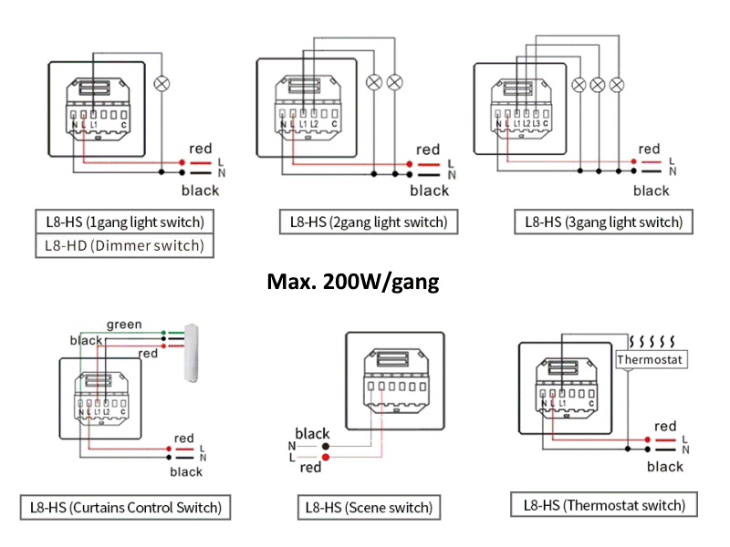

Lanbon L8

Models~
- L8-HS: 3 Relays - load up to 200W/gang
- L8-HD: 1 Dimmer - load up to 200W/gang - not tested!
- L8-HT: Thermostat switch - not tested!
- L8-HB: Boiler switch - not tested!
Form factor~
- EU model: 86mm x 86mm
- US model: 120mm x 74mm
Bezel Color~
- Black
- White
Features:~
- Input voltage 110-250V ~ 50-60Hz AC
- ESP32-WROVER-B
- Capacitive touch screen
- Energy counter
Note
An earlier revision V1.14 (20191203) of the PCB had an analog temperature sensor onboard. It was removed from V1.15 (20200521) of the PCB. You are likely not to get it when buying a recent switch.
Contents~

Flashing~
Disclaimer
Never connect high-voltage when the panel is not properly secured in place.

You can follow this flashing guide on blakadder.com or this discussion post with instructions and photos to flash the firmware without having to open the device.
Steps:
- Disengage the high-voltage power
- Detach the panel from the PSU power supply
- Connect RX, TX, IO0, GND and power pins to the female pinheader:
- Either supply 3.3V or 5V on the corresponding power pin, depending on the voltage supplied by the UART ttl (not both at the same time).
- Because there is no
RESETpin, you need to powercycle the board to activate flash mode
Once the serial connections are made, flash the Lanbon-L8 ESP32 firmware like any other device.
GPIO Settings~
| Pin | L8-HS | Group | Default |
|---|---|---|---|
| 12 | Relay K3 | 1 | Low |
| 14 | Relay | 2 | Low |
| 26 | Mood Red | 4 | Low |
| 27 | Relay | 3 | Low |
| 32 | Mood Green | 5 | Low |
| 33 | Mood Blue | 6 | Low |
To configure all GPIOs at once use this command:
config/gpio {"config":[2360346,2491680,2623009,2097420,2097678,2097947,0,0]}
When using MQTT send to topic hasp/<nodename>/config/gpio a message with payload
{"config":[2360346,2491680,2623009,2097420,2097678,2097947,0,0]}
| Pin | L8-HD | Group | Default |
|---|---|---|---|
| 12 | Dimmer TX (K3) | 1 | Low |
| 26 | Mood Red | 4 | Low |
| 32 | Mood Green | 5 | Low |
| 33 | Mood Blue | 6 | Low |
Note
You can create you own firmware build with GPIOs and many other parameters pre-configured in user_config_override.h as factory defaults for Lanbon L8.
Wiring Diagrams~
The switch supports several wiring configurations:

Video~
LCD Configuration~
The lcd_config.ini file specifies the different properties of the display, except for the actual pin configuration:
st7789v =
-D ST7789_DRIVER=1
;-D CGRAM_OFFSET=1 ; Library will add offsets required
-D TFT_SDA_READ ; Read from display, it only provides an SDA pin
-D TFT_WIDTH=240
-D TFT_HEIGHT=320
-D TFT_ROTATION=2 ; see TFT_ROTATION values
; -D TFT_INVERSION_OFF ; for normal colors
; -D TFT_RGB_ORDER=TFT_RGB ; Colour order Red-Green-Blue
-D TFT_RGB_ORDER=TFT_BGR ; Colour order Blue-Green-Red
-D SPI_FREQUENCY=80000000
-D SPI_READ_FREQUENCY=6000000
-D USER_SETUP_LOADED=1
-D SUPPORT_TRANSACTIONS
HASP build_flags~
Specify the LCD Configuration to use and define the GPIOs in the environment build flags:
build_flags =
${env.build_flags}
${esp32.build_flags}
${esp32.ps_ram}
;region -- TFT_eSPI build options ------------------------
${lcd.st7789v}
-D LANBONL8
-D TFT_RST=18 ; FCP pin2 RESET
-D TFT_SCLK=19 ; FCP pin3 SCL
-D TFT_DC=21 ; FCP pin4 D/C
-D TFT_CS=22 ; FCP pin5 CS
-D TFT_MOSI=23 ; FCP pin6 SDA
-D TFT_MISO=25 ; FCP pin7 SDO
-D TFT_BCKL=5
-D TOUCH_DRIVER=5206
-D TOUCH_SDA=4
-D TOUCH_SCL=0
-D TOUCH_IRQ=-1 ; not connected
-D TOUCH_RST=-1 ; not used, connected to 3.3V on FCP pin10
-D TOUCH_FREQUENCY=400000
-D LED_RED=26
-D LED_GREEN=32
-D LED_BLUE=33
-D RELAY_1=12
-D RELAY_2=24
-D RELAY_3=37
;endregion